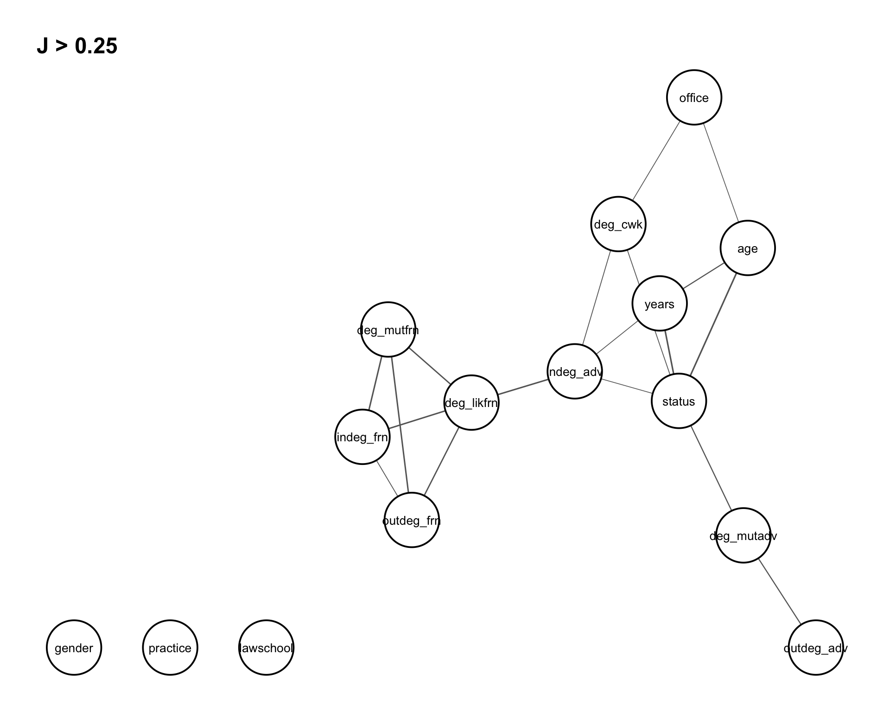
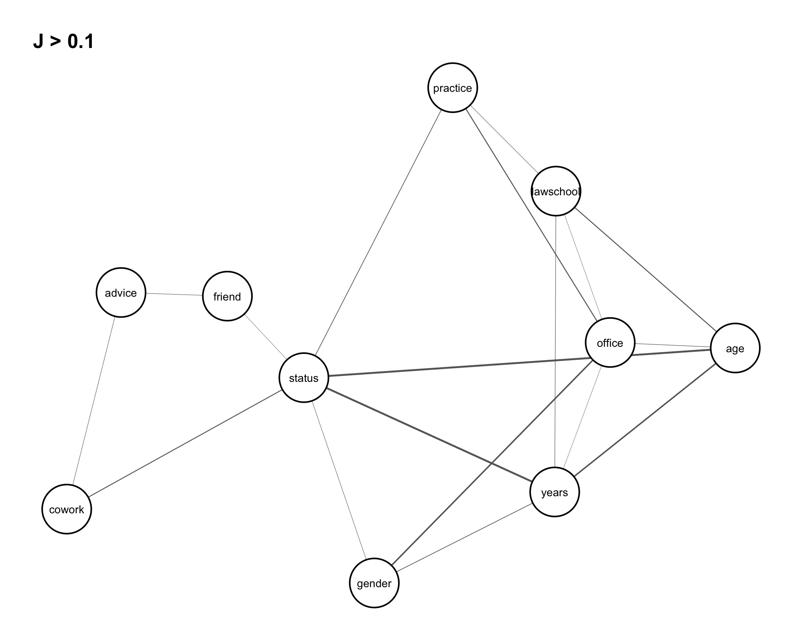
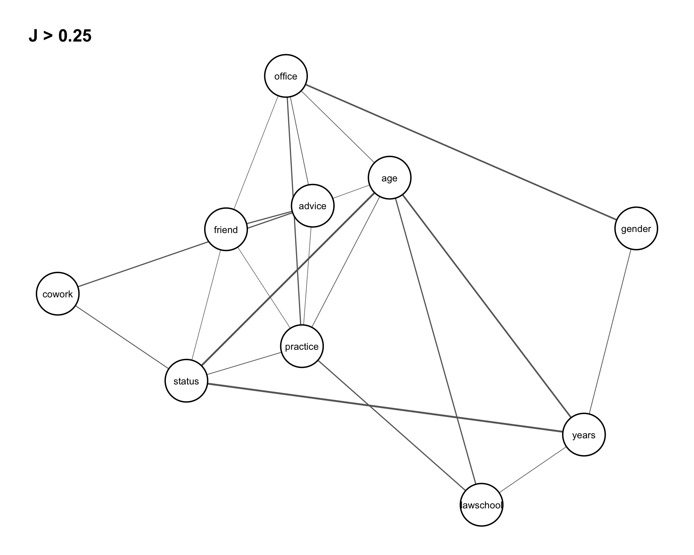
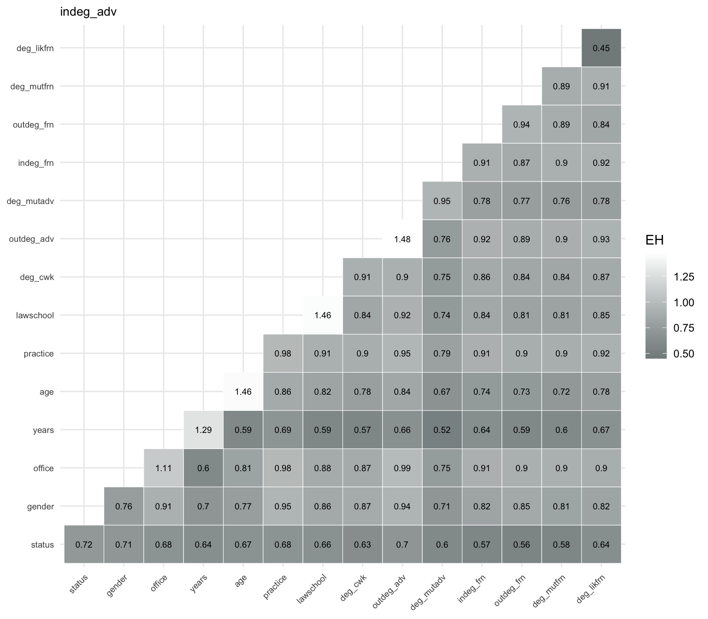
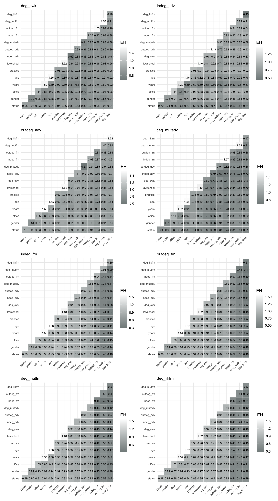
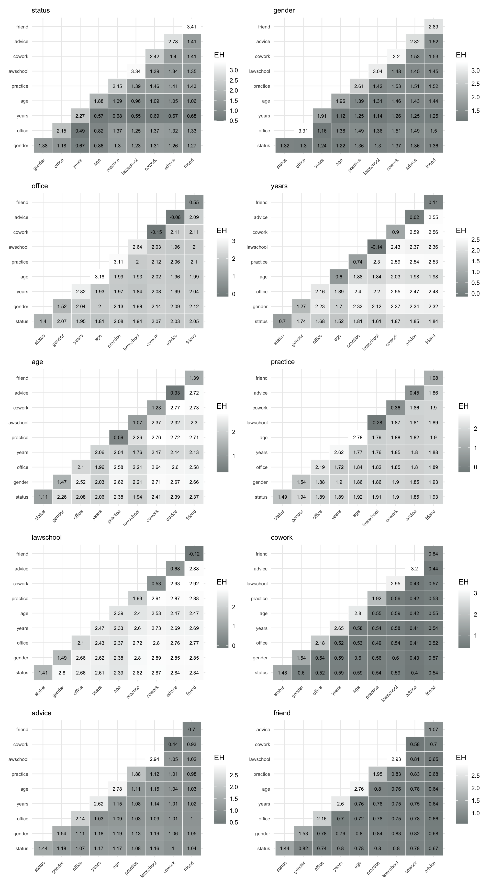
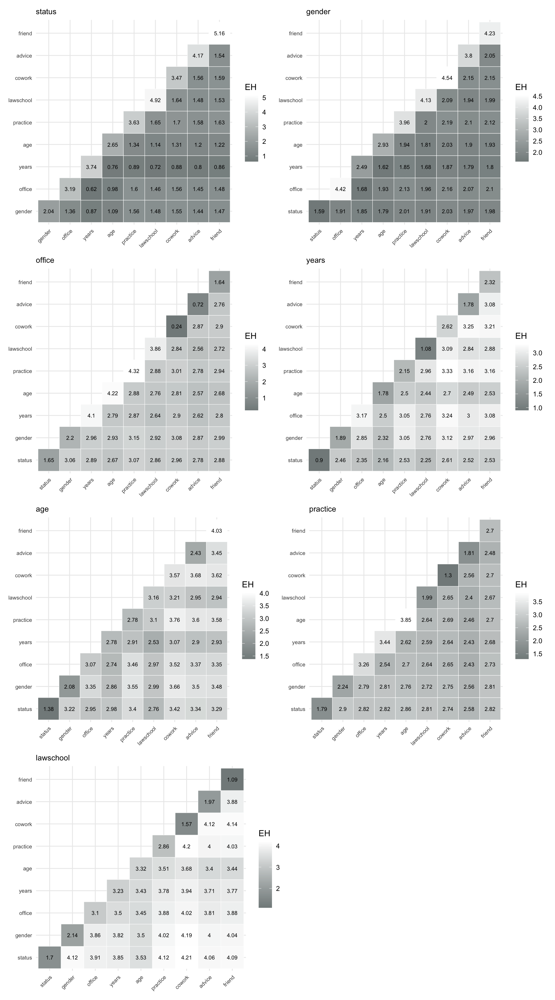
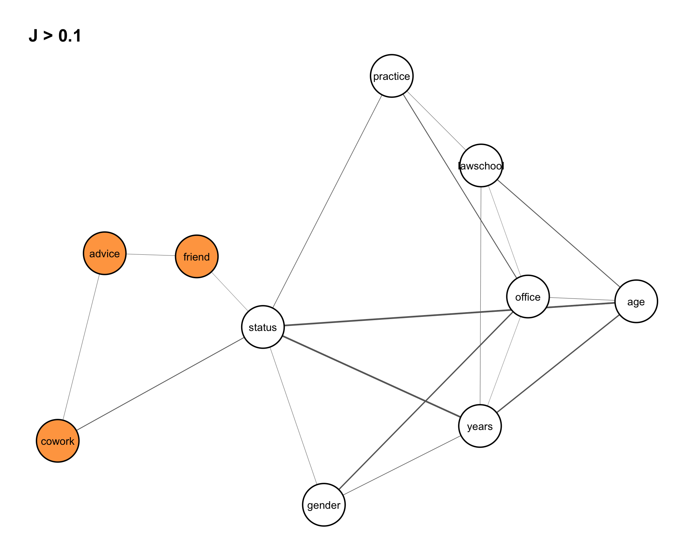

library(netropy)
library(igraph)
library(ggplot2)8 Entropy Analysis
A central goal in the analysis of network data is to understand the dependence structure among variables describing entities and their interactions. Unlike classical data settings, network data often involve complex, nonlinear, and higher-order dependencies that extend beyond simple pairwise relationships.
Multivariate entropy analysis provides a flexible, model-free framework for studying such dependencies. By quantifying uncertainty and information in multivariate distributions, entropy-based methods allow us to detect and characterize relationships among multiple variables simultaneously, without relying on restrictive parametric assumptions.
To apply these methods, variables must be represented on finite discrete range spaces and aligned to a common domain of observation. In network settings, this typically involves preprocessing steps such as discretization and the careful definition of observational units (e.g., nodes, dyads, or higher-order structures). These steps are essential for obtaining reliable entropy estimates and meaningful interpretations.
In this chapter, we apply multivariate entropy analysis to network data, focusing on how data representation and domain alignment shape the identification of dependencies. The analysis proceeds through a sequence of complementary steps:
- entropy measures are used to quantify dependence
- association graphs provide intuitive representations of these relationships
- divergence-based methods allow us to assess the adequacy of simplified structural models.
Together, these tools form a coherent framework that supports both exploratory analysis and model-based interpretation, enabling a deeper understanding of complex dependence structures in network data.
8.1 Packages Needed for this Chapter
8.2 Network Data Representation and Transformation
Network data consist of variables defined on different domains, most commonly nodes (vertices) and dyads (edges). While vertex variables are observed on \(n\) nodes, edge variables are observed on \(\binom{n}{2}\) dyads. Since entropy analysis requires all variables to be defined on a common domain, these differences must be resolved through appropriate transformations.
Let \(V = {1, \dots, n}\) denote a set of nodes. Suppose \(X_i\), \(i = 1, \dots, m’\), are vertex variables with \(r_i\) outcomes, and \(Y_j\), \(j = 1, \dots, m’’\), are edge (or dyad) variables with \(r’_j\) outcomes. The corresponding joint outcome sizes are \(r’ = \prod r_i\) and \(r’’ = \prod r’_j\). Because these variables are observed on different domains, they cannot be directly combined in entropy calculations.
One possibility is to transform vertex variables to the edge domain. For each pair \((u,v)\), define \(X_i^* = (X_u, X_v)\). This yields a dataset with \(\binom{n}{2}\) observations, allowing the transformed vertex variables to be analyzed jointly with edge (or dyad) variables (see Table 8.1).
| observation | \(X_1^*\) | \(X_2^*\) | \(\cdots\) | \(X_{m'}^*\) | \(Y_1\) | \(Y_2\) | \(\cdots\) | \(Y_{m''}\) |
|---|---|---|---|---|---|---|---|---|
| 1 | ||||||||
| 2 | ||||||||
| \(\vdots\) | ||||||||
| \(\binom{n}{2}\) |
An alternative is to transform edge variables to the vertex domain. For each node \(v\), define \(Y_j^* = \sum_u Y_{uv}\). This produces vertex-level summaries such as degrees or centrality-type measures and results in a dataset with \(n\) observations (see Table 8.2).
| observation | \(X_1\) | \(X_2\) | \(\cdots\) | \(X_{m'}\) | \(Y_1^*\) | \(Y_2^*\) | \(\cdots\) | \(Y_{m''}^*\) |
|---|---|---|---|---|---|---|---|---|
| 1 | ||||||||
| 2 | ||||||||
| \(\vdots\) | ||||||||
| \(n\) |
A useful extension is to construct edge attributes directly from vertex attributes. For example, if \((W_i, T_i, P_i)\) are binary vertex variables for node \(i\), then edge-level variables can be defined by \(W_{ij} = W_i + W_j\), \(T_{ij} = T_i + T_j\), and \(P_{ij} = P_i + P_j\) (Frank and Shafie 2016). These new variables take values in \({0,1,2}\) and can be analyzed jointly with other dyadic variables.
These transformations involve trade-offs. Extending vertex variables to the edge domain increases the number of observations but also enlarges the joint outcome space. Aggregating edge variables to the vertex domain simplifies the data structure but may reduce variability and finer relational detail. Nevertheless, these transformations are essential because they make it possible to bring variables from different domains into a common analytical framework. The same principles extend naturally to higher-order structures such as triads.
Once variables have been aligned to a common domain and appropriately discretized, the data are ready for multivariate entropy analysis. Entropy can be used for dimensionality reduction by identifying redundant variables and selecting informative subsets. Mutual information, derived from joint entropy, quantifies the strength and form of dependence between variables, including higher-order interactions. Expected conditional entropies can be used to assess predictive power by measuring how much uncertainty about one variable is reduced given knowledge of others. Together, these measures provide a comprehensive approach to understanding association, dependence, and information flow in network data. In the following sections, we illustrate this framework through an application.
8.3 Network Study of Corporate Law firm
The first application considers network data from a corporate law firm in the Northeastern U.S.(Lazega 2001) which is available in the netropy package.
The network consists of 71 lawyers connected through three types of informal interactions: co-working (undirected), advice-seeking (directed), and friendship (directed). In addition, each lawyer is described by several attributes, including status (associate or partner), gender, office location (Boston, Hartford, or Providence), years at the firm, age, and area of practice (corporate or litigation).
To load the data, we extract the adjacency matrices corresponding to the three network relations (advice, friendship, and co-working) as well as the dataframe containing node-level attributes for each lawyer. The objects are stored in a list and can be assigned as follows:
data(lawdata)
adj_advice <- lawdata[[1]] # adjacency matrix: advice network (directed)
adj_friend <- lawdata[[2]] # adjacency matrix: friendship network (directed)
adj_cowork <- lawdata[[3]] # adjacency matrix: co-working network (undirected)
df_att <- lawdata[[4]] # node attributes for the 71 lawyersIn the following analyses we also consider three additional networks created from the observed ones above. We create new dyad variables for mutual friendship and mutual advice, and likely friendships which is an undirected network and does not require reciprocal reporting of friendships. The latter is done by creating the directed graph object and then extracting the adjacency matrix from the graph assuming it is undirected instead:
# mutual advice
adj_mutadv <- adj_advice*t(adj_advice)
# mutual friendship
adj_mutfrn <- adj_friend*t(adj_friend)
# likely friendship
g_frn <- graph_from_adjacency_matrix(adj_friend, mode="directed")
g_likfrn <- as_undirected(g_frn)
adj_likfrn <- as_adjacency_matrix(g_likfrn, sparse = FALSE)8.3.1 Data Editing
Vertex Variables
Observed node variables are the attributes in the data frame df_att. The first 5 lines of this data frame are:
head(df_att, 5) senior status gender office years age practice lawschool
1 1 1 1 1 31 64 1 1
2 2 1 1 1 32 62 0 1
3 3 1 1 2 13 67 1 1
4 4 1 1 1 31 59 0 3
5 5 1 1 2 31 59 1 2All variables, except years and age, are categorical with finite range spaces and therefore kept in their original form. To incorporate the continuous variables years and age into the entropy analysis, we first transform them into ordinal variables with a small number of categories. Since entropy estimation requires finite range spaces with sufficiently many observations in each category, we use the empirical cumulative distribution functions (CDFs) of these variables to identify cutpoints that produce approximately equally sized groups.
We begin by constructing frequency tables for years and age, and then compute the corresponding relative and cumulative relative frequencies.
# Years CDF data
frq_years <- table(df_att$years) |>
as.data.frame()
names(frq_years) <- c("years", "freq")
frq_years$years <- as.numeric(as.character(frq_years$years))
frq_years$rel.freq <- frq_years$freq / sum(frq_years$freq)
frq_years$cum.rel.freq <- cumsum(frq_years$rel.freq)
# Age CDF data
frq_age <- table(df_att$age) |>
as.data.frame()
names(frq_age) <- c("age", "freq")
frq_age$age <- as.numeric(as.character(frq_age$age))
frq_age$rel.freq <- frq_age$freq / sum(frq_age$freq)
frq_age$cum.rel.freq <- cumsum(frq_age$rel.freq)The empirical CDFs make it possible to inspect how the observations accumulate across the support of each variable. This is shown in Figure 8.1. We use these plots to choose cutpoints that divide the data into three approximately equally sized groups. For years, the selected cutpoints are \(3\) and \(13\), while for age, the selected cutpoints are \(35\) and \(45\).
years at firm and age. The dashed horizontal lines indicate the target quantiles (approximately one-third and two-thirds), while the dotted vertical lines show the selected cutpoints used to define three approximately equally sized categories for each variable.
Using these cutpoints, we create a new dataframe att_var that contains the variables used in the analysis. All variables except years and age are already categorical with finite range spaces and are therefore retained in their original form, apart from simple recoding to start at \(0\) where needed. The variables years and age are recoded into three ordinal categories.
By looking at these cdf’s we can find values with which we base the categories on:
att_var <- data.frame(
status = df_att$status - 1,
gender = df_att$gender,
office = df_att$office - 1,
years = ifelse(df_att$years <= 3, 0,
ifelse(df_att$years <= 13, 1, 2)),
age = ifelse(df_att$age <= 35, 0,
ifelse(df_att$age <= 45, 1, 2)),
practice = df_att$practice,
lawschool = df_att$lawschool - 1
)Finally, we examine the resulting categorized distributions for years and age to confirm that the selected cutpoints produce reasonably balanced groups. This helps ensure that the discretized variables are suitable for subsequent entropy-based analysis. This is shown in Figure 8.2.
age and years, showing approximately balanced categories after CDF-based grouping.
This preprocessing step yields a set of discrete variables with manageable range sizes, making them appropriate for estimating joint and conditional entropies in the subsequent network analysis.
Next, we transform the observed dyad variables into node-level variables. This is achieved by aggregating edge information into node-based measures. In particular, we use degree-based summaries: in-degree and out-degree for the directed advice and friendship networks, and degree (number of ties) for the undirected co-work network, as well as for the mutual advice, mutual friendship, and likely friendship networks.
To compute these measures, we first construct graph objects from each adjacency matrix (note that the directed friendship graph g_frn and the undirected likely-friendship graph g_likfrn were already created above):
g_cwk <- graph_from_adjacency_matrix(adj_cowork, mode = "undirected")
g_adv <- graph_from_adjacency_matrix(adj_advice, mode = "directed")
g_mutadv <- graph_from_adjacency_matrix(adj_mutadv, mode = "undirected")
g_mutfrn <- graph_from_adjacency_matrix(adj_mutfrn, mode = "undirected")Degrees are then computed as
deg_cwk <- degree(g_cwk)
indeg_adv <- degree(g_adv, mode = "in")
outdeg_adv <- degree(g_adv, mode = "out")
deg_mutadv <- degree(g_mutadv)
indeg_frn <- degree(g_frn, mode = "in")
outdeg_frn <- degree(g_frn, mode = "out")
deg_mutfrn <- degree(g_mutfrn)
deg_likfrn <- degree(g_likfrn)These variables are then categorized using the same procedure as above for the other vertex variables:
deg_var <- data.frame(
deg_cwk = ifelse(deg_cwk <= 9, 0, 1),
indeg_adv = ifelse(indeg_adv <= 10, 0, 1),
outdeg_adv = ifelse(outdeg_adv <= 11, 0, 1),
deg_mutadv = ifelse(deg_mutadv <= 3, 0, 1),
indeg_frn = ifelse(indeg_frn <= 7, 0, 1),
outdeg_frn = ifelse(outdeg_frn <= 7, 0, 1),
deg_mutfrn = ifelse(deg_mutfrn <= 4, 0, 1),
deg_likfrn = ifelse(deg_likfrn <= 11, 0, 1)
)Merging deg_var and att_var yields the final data frame vertex_var, which contains all 15 observed and derived vertex variables used in the subsequent entropy analysis:
vertex_var <- cbind(att_var, deg_var)The resulting dataset vertex_var contains all discretized vertex-level variables used in the entropy analysis. The first rows are shown in Table 8.3.
| status | gender | office | years | age | practice | lawschool | deg_cwk | indeg_adv | outdeg_adv | deg_mutadv | indeg_frn | outdeg_frn | deg_mutfrn | deg_likfrn |
|---|---|---|---|---|---|---|---|---|---|---|---|---|---|---|
| 0 | 1 | 0 | 2 | 2 | 1 | 0 | 0 | 1 | 0 | 0 | 0 | 0 | 0 | 0 |
| 0 | 1 | 0 | 2 | 2 | 0 | 0 | 1 | 1 | 0 | 1 | 1 | 0 | 0 | 0 |
| 0 | 1 | 1 | 1 | 2 | 1 | 0 | 0 | 0 | 0 | 1 | 0 | 0 | 0 | 0 |
| 0 | 1 | 0 | 2 | 2 | 0 | 2 | 1 | 1 | 1 | 1 | 1 | 1 | 1 | 1 |
| 0 | 1 | 1 | 2 | 2 | 1 | 1 | 1 | 1 | 0 | 0 | 0 | 0 | 0 | 0 |
| 0 | 1 | 1 | 2 | 2 | 1 | 0 | 1 | 1 | 0 | 0 | 0 | 0 | 0 | 0 |
| 0 | 1 | 1 | 2 | 2 | 0 | 2 | 0 | 0 | 0 | 0 | 0 | 0 | 0 | 0 |
| 0 | 1 | 0 | 2 | 2 | 1 | 2 | 0 | 1 | 0 | 0 | 0 | 0 | 0 | 0 |
| 0 | 1 | 0 | 2 | 2 | 0 | 0 | 0 | 1 | 0 | 0 | 1 | 0 | 1 | 1 |
| 0 | 1 | 0 | 2 | 2 | 0 | 2 | 0 | 1 | 0 | 0 | 0 | 1 | 0 | 1 |
Dyad Variables
Dyad variables (or edge variables) are constructed as pairs of incident vertex variables, resulting in \(\binom{71}{2} = 2485\) observations (i.e., the number of rows in the dyadic data frames created below).
The observed node attributes in the data frame att_var are therefore transformed into dyadic attributes by pairing the values of two connected vertices. For example, the binary variable status yields four possible dyadic outcomes: \((0,0)\), \((0,1)\), \((1,0)\), and \((1,1)\). Similarly, the categorical variable office with three levels results in nine possible dyadic outcomes: \((0,0)\), \((0,1)\), \((0,2)\), \((1,0)\), \((1,1)\), \((1,2)\), \((2,0)\), \((2,1)\), and \((2,2)\).
These transformations can be carried out using the function get_dyad_var(), where the argument type = "att" specifies that the input consists of vertex attributes. This procedure is applied to all vertex variables in the dataset:
dyad_status <- get_dyad_var(att_var$status, type = "att")
dyad_gender <- get_dyad_var(att_var$gender, type = "att")
dyad_office <- get_dyad_var(att_var$office, type = "att")
dyad_years <- get_dyad_var(att_var$years, type = "att")
dyad_age <- get_dyad_var(att_var$age, type = "att")
dyad_practice <- get_dyad_var(att_var$practice, type = "att")
dyad_lawschool <- get_dyad_var(att_var$lawschool, type = "att")Note that the dyadic outcomes are recoded to numerical values to avoid character objects when performing the entropy analysis. In practice, the actual labels of the categories are irrelevant, as entropy depends only on the frequencies of occurrence. For example, the variable status takes values \(0\)–\(3\), while office takes values \(0\)–\(8\).
In a similar way, we construct dyad variables based on observed and derived ties. For undirected networks, dyad variables are simple indicator variables obtained directly from the adjacency matrix. For directed networks, each dyad is represented by a pair of indicators corresponding to sending and receiving ties, resulting in four possible outcomes (e.g., for advice and friendship).
Using the same function as above, we now set the argument type = "tie" and provide the adjacency matrix as input. The function automatically determines whether the network is directed or undirected and creates the appropriate dyadic variable.
dyad_cwk <- get_dyad_var(adj_cowork, type = "tie")two outcomes based on an indicator variable for the undirected relation is createddyad_adv <- get_dyad_var(adj_advice, type = "tie")four outcomes based on pairs of indicators for the directed relation is createddyad_mutadv <- get_dyad_var(adj_mutadv, type = "tie")two outcomes based on an indicator variable for the undirected relation is createddyad_frn <- get_dyad_var(adj_friend, type = "tie")four outcomes based on pairs of indicators for the directed relation is createddyad_mutfrn <- get_dyad_var(adj_mutfrn, type = "tie")two outcomes based on an indicator variable for the undirected relation is createddyad_likfrn <- get_dyad_var(adj_likfrn, type = "tie")two outcomes based on an indicator variable for the undirected relation is createdNext, all dyad variables are merged into a single data frame for subsequent entropy analysis:
dyad_var <- data.frame(
status = dyad_status$var,
gender = dyad_gender$var,
office = dyad_office$var,
years = dyad_years$var,
age = dyad_age$var,
practice = dyad_practice$var,
lawschool = dyad_lawschool$var,
cowork = dyad_cwk$var,
advice = dyad_adv$var,
mutadv = dyad_mutadv$var,
friend = dyad_frn$var,
mutfrn = dyad_mutfrn$var,
likfrn = dyad_likfrn$var
)The resulting dataset dyad_var contains all dyadic variables used in the entropy analysis. The first rows are shown in Table 8.4.
| status | gender | office | years | age | practice | lawschool | cowork | advice | mutadv | friend | mutfrn | likfrn |
|---|---|---|---|---|---|---|---|---|---|---|---|---|
| 3 | 3 | 0 | 8 | 8 | 1 | 0 | 0 | 3 | 1 | 2 | 0 | 1 |
| 3 | 3 | 3 | 5 | 8 | 3 | 0 | 0 | 0 | 0 | 0 | 0 | 0 |
| 3 | 3 | 3 | 5 | 8 | 2 | 0 | 0 | 1 | 0 | 0 | 0 | 0 |
| 3 | 3 | 0 | 8 | 8 | 1 | 6 | 0 | 1 | 0 | 2 | 0 | 1 |
| 3 | 3 | 0 | 8 | 8 | 0 | 6 | 0 | 1 | 0 | 1 | 0 | 1 |
| 3 | 3 | 1 | 7 | 8 | 1 | 6 | 0 | 1 | 0 | 1 | 0 | 1 |
| 3 | 3 | 3 | 8 | 8 | 3 | 3 | 0 | 1 | 0 | 0 | 0 | 0 |
| 3 | 3 | 3 | 8 | 8 | 2 | 3 | 0 | 0 | 0 | 0 | 0 | 0 |
| 3 | 3 | 4 | 7 | 8 | 3 | 3 | 0 | 0 | 0 | 0 | 0 | 0 |
| 3 | 3 | 3 | 8 | 8 | 2 | 5 | 0 | 0 | 0 | 0 | 0 | 0 |
Triad Variables
A similar function, get_triad_var(), is used to transform vertex variables and different relation types into triad-level variables. These variables represent combinations of three nodes and therefore yield \(\binom{71}{3} = 57155\) observations in the law firm dataset. Each observation corresponds either to a triple of individual attributes or to the configuration of relations among three nodes.
As for dyad variables, the function requires specifying the type of input: type = "att" for vertex attributes (given as column vectors) and type = "tie" for relational data (given as adjacency matrices).
For vertex variables, triad variables are constructed as follows:
triad_status <- get_triad_var(att_var$status, type = "att")
triad_gender <- get_triad_var(att_var$gender, type = "att")
triad_office <- get_triad_var(att_var$office, type = "att")
triad_years <- get_triad_var(att_var$years, type = "att")
triad_age <- get_triad_var(att_var$age, type = "att")
triad_practice <- get_triad_var(att_var$practice, type = "att")
triad_lawschool <- get_triad_var(att_var$lawschool, type = "att")Binary vertex attributes result in \(2^3 = 8\) possible triadic outcomes: \[ (0,0,0), (1,0,0), (0,1,0), (1,1,0), (0,0,1), (1,0,1), (0,1,1), (1,1,1), \] which are recoded as integers from \(0\) to \(7\). Similarly, attributes with three categories yield \(3^3 = 27\) possible triadic outcomes, coded from \(0\) to \(26\).
For relational variables, undirected ties are transformed from binary outcomes into triad variables with \(8\) possible configurations, while directed ties are transformed from \(4\) dyadic outcomes into \(4^3 = 64\) triadic configurations, capturing all possible combinations of sending and receiving ties among three nodes.
The triad variables based on ties are constructed as follows:
triad_cwk <- get_triad_var(adj_cowork, type = "tie")8 outcomes based on triples of indicators for the undirected relation are createdtriad_adv <- get_triad_var(adj_advice, type = "tie")64 outcomes based on a sequence of 6 indicators for the directed relation are createdtriad_mutadv <- get_triad_var(adj_mutadv, type = "tie")8 outcomes based on triples of indicators for the undirected relation are createdtriad_frn <- get_triad_var(adj_friend, type = "tie")64 outcomes based on a sequence of 6 indicators for the directed relation are createdtriad_mutfrn <- get_triad_var(adj_mutfrn, type = "tie")8 outcomes based on triples of indicators for the undirected relation are createdtriad_likfrn <- get_triad_var(adj_likfrn, type = "tie")8 outcomes based on triples of indicators for the undirected relation are createdAll triad variables are then merged into a single data frame for subsequent entropy analysis:
triad_var <- data.frame(
status = triad_status$var,
gender = triad_gender$var,
office = triad_office$var,
years = triad_years$var,
age = triad_age$var,
practice = triad_practice$var,
lawschool = triad_lawschool$var,
cowork = triad_cwk$var,
advice = triad_adv$var,
mutadv = triad_mutadv$var,
friend = triad_frn$var,
mutfrn = triad_mutfrn$var,
likfrn = triad_likfrn$var
)The resulting dataset triad_var contains all triad-level variables used in the entropy analysis. The first rows are shown in Table 8.5.
| status | gender | office | years | age | practice | lawschool | cowork | advice | mutadv | friend | mutfrn | likfrn |
|---|---|---|---|---|---|---|---|---|---|---|---|---|
| 7 | 7 | 9 | 17 | 26 | 5 | 0 | 0 | 35 | 1 | 1 | 0 | 1 |
| 7 | 7 | 0 | 26 | 26 | 1 | 18 | 0 | 43 | 1 | 37 | 0 | 7 |
| 7 | 7 | 9 | 26 | 26 | 5 | 9 | 0 | 11 | 1 | 1 | 0 | 1 |
| 7 | 7 | 9 | 26 | 26 | 5 | 0 | 0 | 19 | 1 | 1 | 0 | 1 |
| 7 | 7 | 9 | 26 | 26 | 1 | 18 | 4 | 35 | 1 | 1 | 0 | 1 |
| 7 | 7 | 0 | 26 | 26 | 5 | 18 | 0 | 11 | 1 | 5 | 0 | 3 |
| 7 | 7 | 0 | 26 | 26 | 1 | 0 | 0 | 3 | 1 | 1 | 0 | 1 |
| 7 | 7 | 0 | 26 | 26 | 1 | 18 | 0 | 35 | 1 | 33 | 0 | 5 |
| 7 | 7 | 0 | 26 | 26 | 5 | 0 | 0 | 11 | 1 | 1 | 0 | 1 |
| 7 | 7 | 0 | 26 | 26 | 1 | 9 | 0 | 35 | 1 | 41 | 0 | 7 |
8.3.2 Univariate and Bivariate Entropies
The univariate entropy of a discrete variable \(X\) with \(r\) outcomes is defined as \[ H(X) = \sum_x p(x) \log_2 \frac{1}{p(x)}. \] It measures the uncertainty of \(X\). A variable with zero entropy has no uncertainty (it is constant) and can be omitted from further analysis. The maximum entropy is \(\log_2 r\), which corresponds to a uniform distribution over all outcomes.
The bivariate entropy of two discrete variables \(X\) and \(Y\) is given by \[ H(X,Y) = \sum_x \sum_y p(x,y) \log_2 \frac{1}{p(x,y)}. \] This quantity can be used to assess redundancy, functional relationships, and stochastic independence. It satisfies the bounds \[ H(X) \leq H(X,Y) \leq H(X) + H(Y). \]
- The lower bound is attained if and only if there is a functional relationship \(Y = f(X)\).
- The upper bound is attained if and only if \(X\) and \(Y\) are stochastically independent, \(X \bot Y\).
In particular, if \(H(X,Y) = H(X)\) or \(H(X,Y) = H(Y)\), one of the variables is redundant and does not provide additional information.
The function entropy_bivar() computes the bivariate entropies for all pairs of variables in a data frame. The results are returned as an upper triangular matrix, where each cell contains the joint entropy of the corresponding row and column variables. The diagonal entries represent the univariate entropies of each variable.
Vertex Variables
We apply the function to the data frame containing all observed and transformed vertex variables.
h2_vertex <- entropy_bivar(vertex_var)The output, rounded to 2 decimals, is shown in Table 8.6.
| status | gender | office | years | age | practice | lawschool | deg_cwk | indeg_adv | outdeg_adv | deg_mutadv | indeg_frn | outdeg_frn | deg_mutfrn | deg_likfrn | |
|---|---|---|---|---|---|---|---|---|---|---|---|---|---|---|---|
| status | 1 | 1.70 | 2.08 | 2.01 | 2.28 | 1.98 | 2.46 | 1.98 | 1.72 | 2.00 | 1.91 | 1.99 | 1.98 | 1.99 | 1.98 |
| gender | NA | 0.82 | 1.93 | 2.23 | 2.38 | 1.80 | 2.32 | 1.79 | 1.76 | 1.81 | 1.81 | 1.81 | 1.81 | 1.81 | 1.81 |
| office | NA | NA | 1.12 | 2.69 | 2.67 | 2.09 | 2.61 | 2.11 | 2.11 | 2.06 | 2.11 | 2.03 | 2.06 | 2.05 | 2.02 |
| years | NA | NA | NA | 1.58 | 2.75 | 2.56 | 3.01 | 2.52 | 2.29 | 2.55 | 2.52 | 2.55 | 2.54 | 2.55 | 2.52 |
| age | NA | NA | NA | NA | 1.58 | 2.56 | 2.88 | 2.55 | 2.46 | 2.55 | 2.55 | 2.58 | 2.57 | 2.58 | 2.57 |
| practice | NA | NA | NA | NA | NA | 0.98 | 2.51 | 1.98 | 1.98 | 1.97 | 1.98 | 1.98 | 1.98 | 1.98 | 1.98 |
| lawschool | NA | NA | NA | NA | NA | NA | 1.53 | 2.52 | 2.46 | 2.52 | 2.49 | 2.48 | 2.52 | 2.48 | 2.52 |
| deg_cwk | NA | NA | NA | NA | NA | NA | NA | 1.00 | 1.91 | 1.94 | 1.89 | 1.94 | 1.97 | 1.95 | 1.97 |
| indeg_adv | NA | NA | NA | NA | NA | NA | NA | NA | 1.00 | 2.00 | 1.79 | 1.92 | 1.91 | 1.91 | 1.94 |
| outdeg_adv | NA | NA | NA | NA | NA | NA | NA | NA | NA | 1.00 | 1.94 | 1.92 | 1.88 | 1.94 | 1.91 |
| deg_mutadv | NA | NA | NA | NA | NA | NA | NA | NA | NA | NA | 1.00 | 1.84 | 1.89 | 1.89 | 1.89 |
| indeg_frn | NA | NA | NA | NA | NA | NA | NA | NA | NA | NA | NA | 1.00 | 1.69 | 1.45 | 1.46 |
| outdeg_frn | NA | NA | NA | NA | NA | NA | NA | NA | NA | NA | NA | NA | 1.00 | 1.58 | 1.51 |
| deg_mutfrn | NA | NA | NA | NA | NA | NA | NA | NA | NA | NA | NA | NA | NA | 1.00 | 1.50 |
| deg_likfrn | NA | NA | NA | NA | NA | NA | NA | NA | NA | NA | NA | NA | NA | NA | 1.00 |
Bivariate entropies can be used to detect redundant variables that do not contribute additional information and may therefore be omitted from further analysis. Redundancy can be identified by comparing diagonal entries (univariate entropies) with the corresponding off-diagonal values in the same rows or columns. If these values are equal, it indicates that one variable does not provide additional information beyond another.
This can also be assessed using the function redundancy(). The output of redundancy() is a binary matrix indicating whether one variable is redundant with respect to another. A value of 1 means that the corresponding column variable does not provide additional information beyond the row variable, while 0 indicates that the variables contain distinct information.
For the vertex variables in this dataset, no redundancy is detected:
red_vertex <- redundancy(vertex_var, dec = 3)no redundant variablesNote that the argument dec affects the detection of redundant variables, as it controls the rounding of bivariate entropies. Using fewer decimal places increases the likelihood that two variables will appear to have identical entropy values and thus be flagged as redundant.
For illustration, we apply the redundancy() function to the original attribute data frame df_att. Recall that the variable senior consists entirely of unique values and is therefore identified as redundant, as shown below:
red_vertex2 <- redundancy(df_att, dec = 2)
red_vertex2 senior status gender office years age practice lawschool
senior 0 1 1 1 1 1 1 1
status 0 0 0 0 0 0 0 0
gender 0 0 0 0 0 0 0 0
office 0 0 0 0 0 0 0 0
years 0 0 0 0 0 0 0 0
age 0 0 0 0 0 0 0 0
practice 0 0 0 0 0 0 0 0
lawschool 0 0 0 0 0 0 0 0# find columns that are redundant with any other variable
colnames(red_vertex2)[rowSums(red_vertex2) >= 1][1] "senior"Here, the variable senior is flagged as redundant with respect to all other variables, as indicated by the row of ones. This occurs because senior consists entirely of unique values, meaning it does not share any repeated structure with other variables and therefore does not contribute meaningful information for entropy-based analysis. In contrast, all other variables show zeros, indicating no redundancy among them.
Dyad Variables
The data frame dyad_var contains 13 observed and transformed dyad-level variables. To compute the univariate and bivariate entropies, we apply the function entropy_bivar():
h2_dyad <- entropy_bivar(dyad_var)The results shown in Table 8.7 indicate redundancy among the different variants of the advice and friendship relations. This is expected, as these variables are derived from the same underlying ties.
mutadv, mutfrn, and likfrn do not provide additional information beyond advice and friend, respectively, and should therefore excluded from subsequent analyses.
| status | gender | office | years | age | practice | lawschool | cowork | advice | mutadv | friend | mutfrn | likfrn | |
|---|---|---|---|---|---|---|---|---|---|---|---|---|---|
| status | 1.49 | 2.87 | 3.64 | 3.37 | 3.91 | 3.45 | 4.36 | 2.09 | 2.69 | 1.82 | 2.32 | 1.84 | 2.08 |
| gender | NA | 1.55 | 3.76 | 3.94 | 4.27 | 3.51 | 4.44 | 2.16 | 2.79 | 1.91 | 2.42 | 1.91 | 2.18 |
| office | NA | NA | 2.24 | 4.83 | 4.90 | 4.15 | 5.06 | 2.79 | 3.39 | 2.58 | 3.04 | 2.57 | 2.81 |
| years | NA | NA | NA | 2.67 | 4.86 | 4.58 | 5.42 | 3.27 | 3.87 | 3.01 | 3.48 | 3.00 | 3.25 |
| age | NA | NA | NA | NA | 2.80 | 4.74 | 5.35 | 3.41 | 4.03 | 3.16 | 3.64 | 3.15 | 3.40 |
| practice | NA | NA | NA | NA | NA | 1.96 | 4.88 | 2.53 | 3.13 | 2.31 | 2.83 | 2.33 | 2.59 |
| lawschool | NA | NA | NA | NA | NA | NA | 2.95 | 3.57 | 4.19 | 3.32 | 3.81 | 3.31 | 3.58 |
| cowork | NA | NA | NA | NA | NA | NA | NA | 0.62 | 1.69 | 0.92 | 1.46 | 0.96 | 1.21 |
| advice | NA | NA | NA | NA | NA | NA | NA | NA | 1.25 | 1.25 | 1.95 | 1.52 | 1.73 |
| mutadv | NA | NA | NA | NA | NA | NA | NA | NA | NA | 0.37 | 1.15 | 0.66 | 0.92 |
| friend | NA | NA | NA | NA | NA | NA | NA | NA | NA | NA | 0.88 | 0.88 | 0.88 |
| mutfrn | NA | NA | NA | NA | NA | NA | NA | NA | NA | NA | NA | 0.37 | 0.80 |
| likfrn | NA | NA | NA | NA | NA | NA | NA | NA | NA | NA | NA | NA | 0.64 |
The redundancy can also be confirmed using the redundancy() function. Based on this analysis, we remove the redundant variables mutadv, mutfrn, and likfrn (columns 10, 12, and 13) from the data frame:
dyad_var <- dyad_var[-c(10, 12:13)]The resulting data frame contains the non-redundant dyad variables used in the subsequent entropy analysis.
Triad Variables
The data frame triad_var contains the observed and transformed triad-level variables. To compute the univariate and bivariate entropies, we apply the function entropy_bivar():
h2_triad <- entropy_bivar(triad_var)The results shown in Table 8.8 reveal redundancy among the triad variables derived from the different variants of the advice and friendship relations. As in the dyadic case, this is expected since these variables originate from the same underlying ties.
| status | gender | office | years | age | practice | lawschool | cowork | advice | mutadv | friend | mutfrn | likfrn | |
|---|---|---|---|---|---|---|---|---|---|---|---|---|---|
| status | 1.79 | 3.84 | 4.99 | 4.44 | 5.26 | 4.73 | 6.04 | 3.58 | 5.32 | 2.78 | 4.24 | 2.81 | 3.52 |
| gender | NA | 2.24 | 5.54 | 5.42 | 5.96 | 5.18 | 6.48 | 4.06 | 5.86 | 3.30 | 4.75 | 3.30 | 4.05 |
| office | NA | NA | 3.34 | 6.71 | 6.96 | 6.20 | 7.44 | 4.98 | 6.66 | 4.31 | 5.64 | 4.29 | 4.94 |
| years | NA | NA | NA | 3.54 | 6.67 | 6.38 | 7.57 | 5.32 | 7.04 | 4.53 | 5.91 | 4.52 | 5.23 |
| age | NA | NA | NA | NA | 3.88 | 6.79 | 7.66 | 5.69 | 7.46 | 4.92 | 6.30 | 4.90 | 5.62 |
| practice | NA | NA | NA | NA | NA | 2.94 | 7.20 | 4.62 | 6.32 | 3.94 | 5.43 | 3.99 | 4.74 |
| lawschool | NA | NA | NA | NA | NA | NA | 4.34 | 6.16 | 7.91 | 5.38 | 6.80 | 5.37 | 6.13 |
| cowork | NA | NA | NA | NA | NA | NA | NA | 1.83 | 4.93 | 2.70 | 4.24 | 2.82 | 3.53 |
| advice | NA | NA | NA | NA | NA | NA | NA | NA | 3.65 | 3.65 | 5.65 | 4.43 | 5.04 |
| mutadv | NA | NA | NA | NA | NA | NA | NA | NA | NA | 1.06 | 3.34 | 1.93 | 2.66 |
| friend | NA | NA | NA | NA | NA | NA | NA | NA | NA | NA | 2.55 | 2.55 | 2.55 |
| mutfrn | NA | NA | NA | NA | NA | NA | NA | NA | NA | NA | NA | 1.07 | 2.30 |
| likfrn | NA | NA | NA | NA | NA | NA | NA | NA | NA | NA | NA | NA | 1.83 |
The redundancy can be confirmed using the redundancy() function and after removing the redundant variables (mutadv, mutfrn, and likfrn), the resulting data frame contains 10 triad variables, which are used in the subsequent entropy analysis.
triad_var <- triad_var[-c(10, 12:13)]8.3.3 Joint Entropies and Association Graphs
Joint entropy measures the total uncertainty associated with a pair of variables \((X,Y)\) and provides a basis for assessing their dependence. The difference between the sum of the marginal entropies and the joint entropy is given by
\[ J(X,Y) = H(X) + H(Y) - H(X,Y), \]
which is a non-negative measure of association between \(X\) and \(Y\). It is equal to \(0\) if and only if \(X\) and \(Y\) are stochastically independent, \(X \bot Y\), that is, when \(p(x,y) = p(x,+)p(+,y)\).
For three variables, the trivariate entropy is bounded by
\[ H(X,Y) \leq H(X,Y,Z) \leq H(X,Z) + H(Y,Z) - H(Z). \]
The deviation from the upper bound is given by
\[ EJ(X,Y \mid Z) = H(X,Z) + H(Y,Z) - H(Z) - H(X,Y,Z), \]
which is again non-negative and equals \(0\) if and only if \(X \bot Y \mid Z\). This quantity can therefore be used to assess conditional independence.
Joint entropy values \(J(X,Y)\) for all pairs of variables can be used to explore the dependence structure through association graphs. In such graphs, nodes represent variables and edges connect pairs of variables whose joint entropy exceeds a chosen threshold. By gradually lowering the threshold, additional edges appear and the graph becomes more connected.
Connected components that form cliques indicate groups of mutually dependent variables, while separate components correspond to independent subsets. Conditional independence can be investigated by examining how the graph structure changes when conditioning variables are removed. A threshold that yields a graph with several small (conditionally) independent components may serve as a useful representation of the underlying multivariate structure.
The function joint_entropy() computes joint entropy values for all pairs of variables in a data frame. The output is returned as a list containing: (i) an upper triangular matrix of joint entropy values, with univariate entropies on the diagonal, and (ii) a data frame summarizing the frequency distribution of unique joint entropy values. An optional argument controls the precision (number of decimal places) used in constructing this frequency distribution; the default is 3.
Vertex Variables
We apply the function to the data frame containing the observed and transformed vertex variables:
j_vertex <- joint_entropy(vertex_var, 3)The output is returned as a list containing two objects: j_vertex$mat, an upper triangular matrix of joint entropy values (with univariate entropies on the diagonal), and j_vertex$freq, a data frame summarizing the frequency distribution of unique joint entropy values.
The matrix j_vertex$mat shown in Table 8.9 summarizes the pairwise joint entropy values. Entries equal to \(0\) indicate independence between variables, while larger values indicate stronger dependence. For example, practice is independent of both status and gender.
| status | gender | office | years | age | practice | lawschool | deg_cwk | indeg_adv | outdeg_adv | deg_mutadv | indeg_frn | outdeg_frn | deg_mutfrn | deg_likfrn | |
|---|---|---|---|---|---|---|---|---|---|---|---|---|---|---|---|
| status | 1 | 0.122 | 0.041 | 0.578 | 0.309 | 0.002 | 0.074 | 0.025 | 0.284 | 0.004 | 0.092 | 0.008 | 0.025 | 0.012 | 0.025 |
| gender | NA | 0.817 | 0.015 | 0.176 | 0.019 | 0.001 | 0.027 | 0.026 | 0.053 | 0.011 | 0.003 | 0.001 | 0.011 | 0.001 | 0.003 |
| office | NA | NA | 1.125 | 0.017 | 0.042 | 0.020 | 0.051 | 0.012 | 0.012 | 0.065 | 0.012 | 0.096 | 0.061 | 0.070 | 0.105 |
| years | NA | NA | NA | 1.585 | 0.420 | 0.013 | 0.106 | 0.062 | 0.299 | 0.036 | 0.062 | 0.034 | 0.044 | 0.034 | 0.063 |
| age | NA | NA | NA | NA | 1.585 | 0.010 | 0.242 | 0.038 | 0.128 | 0.039 | 0.032 | 0.001 | 0.011 | 0.001 | 0.011 |
| practice | NA | NA | NA | NA | NA | 0.983 | 0.003 | 0.008 | 0.001 | 0.012 | 0.001 | 0.002 | 0.008 | 0.002 | 0.008 |
| lawschool | NA | NA | NA | NA | NA | NA | 1.533 | 0.009 | 0.074 | 0.012 | 0.043 | 0.050 | 0.013 | 0.053 | 0.008 |
| deg_cwk | NA | NA | NA | NA | NA | NA | NA | 1.000 | 0.092 | 0.064 | 0.107 | 0.064 | 0.033 | 0.053 | 0.033 |
| indeg_adv | NA | NA | NA | NA | NA | NA | NA | NA | 1.000 | 0.002 | 0.206 | 0.078 | 0.092 | 0.092 | 0.064 |
| outdeg_adv | NA | NA | NA | NA | NA | NA | NA | NA | NA | 1.000 | 0.064 | 0.078 | 0.124 | 0.064 | 0.092 |
| deg_mutadv | NA | NA | NA | NA | NA | NA | NA | NA | NA | NA | 1.000 | 0.162 | 0.107 | 0.108 | 0.107 |
| indeg_frn | NA | NA | NA | NA | NA | NA | NA | NA | NA | NA | NA | 0.999 | 0.314 | 0.547 | 0.537 |
| outdeg_frn | NA | NA | NA | NA | NA | NA | NA | NA | NA | NA | NA | NA | 1.000 | 0.417 | 0.492 |
| deg_mutfrn | NA | NA | NA | NA | NA | NA | NA | NA | NA | NA | NA | NA | NA | 0.999 | 0.496 |
| deg_likfrn | NA | NA | NA | NA | NA | NA | NA | NA | NA | NA | NA | NA | NA | NA | 1.000 |
The strongest associations can be identified by combining the matrix with the frequency table j_vertex$freq, which summarizes the distribution of joint entropy values. This is shown in Table 8.10 where we see that the largest joint entropy value is \(0.58\), occurring between the variables years and status.
| j | #(J = j) | #(J >= j) |
|---|---|---|
| 0.578 | 1 | 1 |
| 0.547 | 1 | 2 |
| 0.537 | 1 | 3 |
| 0.496 | 1 | 4 |
| 0.492 | 1 | 5 |
| 0.42 | 1 | 6 |
| 0.417 | 1 | 7 |
| 0.314 | 1 | 8 |
| 0.309 | 1 | 9 |
| 0.299 | 1 | 10 |
These relationships can be conveniently visualized using the function assoc_graph(), which returns a ggraph object where nodes represent variables and edges represent the strength of association (with thicker edges indicating stronger dependence). To focus on the most relevant structure, we set a threshold of \(0.25\), so that only the strongest associations are displayed:
assoc_graph(vertex_var, 0.25)
Dyad Variables
Joint entropies for the dyad variables are computed in the same way as for the vertex variables. Rather than presenting the full output, we focus on visualizing the dependence structure using an association graph. We set a threshold of 0.10 to display the strongest associations:
assoc_graph(dyad_var, 0.10)
From the graph, several patterns can be observed. There is a strong dependence among the variables (status, years, age), as well as notable associations among (lawschool, years, age) and (status, years, gender).
In addition, the graph suggests that the relations cowork and friend are conditionally independent given advice. That is, any observed dependence between cowork and friend can be explained through their association with advice.
Triad Variables
Similarly, joint entropies for the triad variables are computed for the reduced data frame (with redundant variables removed). The dependence structure is again visualized using an association graph. We set a threshold of 0.25 to focus on the strongest associations:
assoc_graph(triad_var, 0.25)
The triad variables exhibit similar dependence patterns as the dyad variables, but with generally stronger associations. In particular, joint entropy values are higher for all pairs of cowork, friend, and advice, indicating stronger interactions among these variables. This further supports the conditional independence observed earlier, suggesting that the relationship between cowork and friend is increasingly explained by advice at the triadic level.
8.3.4 Trivariate Entropies and Prediction Power
Trivariate entropy extends the concepts of univariate and bivariate entropy to three variables. For variables \(X\), \(Y\), and \(Z\), it is defined as \[ H(X,Y,Z) = \sum_x \sum_y \sum_z p(x,y,z) \log_2 \frac{1}{p(x,y,z)}, \] and satisfies the bounds \[ H(X,Y) \leq H(X,Y,Z) \leq H(X,Z) + H(Y,Z) - H(Z). \]
These bounds provide a basis for assessing dependence structures among triples of variables. In particular, the deviation from the lower bound is given by the expected conditional entropy \[ EH(Z \mid X,Y) = H(X,Y,Z) - H(X,Y), \] which measures the remaining uncertainty in \(Z\) given \((X,Y)\). This quantity is non-negative and equals \(0\) if and only if \((X,Y)\) uniquely determine \(Z\), indicating a functional relationship.
This concept parallels the bivariate case, where \[ EH(Y \mid X) = H(X,Y) - H(X) \] measures the remaining uncertainty in \(Y\) given \(X\), and equals \(0\) when \(X\) fully determines \(Y\).
More generally, \(EH(Z \mid X,Y)\) can be interpreted as a measure of prediction uncertainty when \((X,Y)\) are used to predict \(Z\). It reflects, on a logarithmic scale, the average number of possible outcomes of \(Z\) given \((X,Y)\). Smaller values indicate stronger predictive power: if \(EH < 0.5\), \(Z\) can be predicted unambiguously; if \(0.5 \leq EH < 1.5\), there are approximately two possible outcomes on average; and so on. In general, prediction power decreases as \(EH\) increases.
The function prediction_power() computes this quantity for all pairs of variables in a given data frame used to predict a specified target variable \(Z\). The function takes as input the data frame and the variable to be predicted, and returns an upper triangular matrix of expected conditional entropies \(EH(Z \mid X,Y)\) for all pairs \((X,Y)\). The diagonal entries correspond to \(EH(Z \mid X)\), that is, prediction based on a single variable. Entries corresponding to the target variable itself are set to NA.
For easier interpretation, prediction results can be visualized using prediction plots, which display a color-coded matrix with rows representing \(X\) and columns representing \(Y\). Darker colors indicate lower prediction uncertainty and thus higher predictive power for \(Z\). In the following, we compute and visualize prediction power for vertex, dyad, and triad variables.
Vertex Variables
Trivariate entropies for all combinations of vertex variables can be computed using the function entropy_trivar():
h3_vertex <- entropy_trivar(vertex_var)We next assess prediction power for the different degree-based variables derived from the three relation types: co-work, advice, and friendship. Specifically, we evaluate how well pairs of variables predict each of these target variables.
The corresponding prediction power matrices are obtained as follows:
pred_vertex_cwk <- prediction_power("deg_cwk", vertex_var)
pred_vertex_advin <- prediction_power("indeg_adv", vertex_var)
pred_vertex_advout <- prediction_power("outdeg_adv", vertex_var)
pred_vertex_advmut <- prediction_power("deg_mutadv", vertex_var)
pred_vertex_frnin <- prediction_power("indeg_frn", vertex_var)
pred_vertex_frnout <- prediction_power("outdeg_frn", vertex_var)
pred_vertex_frnmut <- prediction_power("deg_mutfrn", vertex_var)
pred_vertex_frnlik <- prediction_power("deg_likfrn", vertex_var)As an illustration, consider predicting the variable indeg_adv, which represents the in-degree in the advice network (i.e., how often a lawyer is asked for advice). The prediction power was computed an assigned to pred_vertex_advin and shown in Table 8.11.
indeg_adv. Entries represent expected conditional entropies \(EH(Z \mid X,Y)\), where lower values indicate higher predictive power. Diagonal entries correspond to single predictors, while off-diagonal entries represent prediction based on pairs of variables; NA values indicate the target variable itself.
| status | gender | office | years | age | practice | lawschool | deg_cwk | indeg_adv | outdeg_adv | deg_mutadv | indeg_frn | outdeg_frn | deg_mutfrn | deg_likfrn | |
|---|---|---|---|---|---|---|---|---|---|---|---|---|---|---|---|
| status | 0.72 | 0.71 | 0.68 | 0.64 | 0.67 | 0.68 | 0.66 | 0.63 | NA | 0.70 | 0.60 | 0.57 | 0.56 | 0.58 | 0.64 |
| gender | NA | 0.76 | 0.91 | 0.70 | 0.77 | 0.95 | 0.86 | 0.87 | NA | 0.94 | 0.71 | 0.82 | 0.85 | 0.81 | 0.82 |
| office | NA | NA | 1.11 | 0.60 | 0.81 | 0.98 | 0.88 | 0.87 | NA | 0.99 | 0.75 | 0.91 | 0.90 | 0.90 | 0.90 |
| years | NA | NA | NA | 1.29 | 0.59 | 0.69 | 0.59 | 0.57 | NA | 0.66 | 0.52 | 0.64 | 0.59 | 0.60 | 0.67 |
| age | NA | NA | NA | NA | 1.46 | 0.86 | 0.82 | 0.78 | NA | 0.84 | 0.67 | 0.74 | 0.73 | 0.72 | 0.78 |
| practice | NA | NA | NA | NA | NA | 0.98 | 0.91 | 0.90 | NA | 0.95 | 0.79 | 0.91 | 0.90 | 0.90 | 0.92 |
| lawschool | NA | NA | NA | NA | NA | NA | 1.46 | 0.84 | NA | 0.92 | 0.74 | 0.84 | 0.81 | 0.81 | 0.85 |
| deg_cwk | NA | NA | NA | NA | NA | NA | NA | 0.91 | NA | 0.90 | 0.75 | 0.86 | 0.84 | 0.84 | 0.87 |
| indeg_adv | NA | NA | NA | NA | NA | NA | NA | NA | NA | NA | NA | NA | NA | NA | NA |
| outdeg_adv | NA | NA | NA | NA | NA | NA | NA | NA | NA | 1.48 | 0.76 | 0.92 | 0.89 | 0.90 | 0.93 |
| deg_mutadv | NA | NA | NA | NA | NA | NA | NA | NA | NA | NA | 0.95 | 0.78 | 0.77 | 0.76 | 0.78 |
| indeg_frn | NA | NA | NA | NA | NA | NA | NA | NA | NA | NA | NA | 0.91 | 0.87 | 0.90 | 0.92 |
| outdeg_frn | NA | NA | NA | NA | NA | NA | NA | NA | NA | NA | NA | NA | 0.94 | 0.89 | 0.84 |
| deg_mutfrn | NA | NA | NA | NA | NA | NA | NA | NA | NA | NA | NA | NA | NA | 0.89 | 0.91 |
| deg_likfrn | NA | NA | NA | NA | NA | NA | NA | NA | NA | NA | NA | NA | NA | NA | 0.45 |
These prediction strengths can be visualized using a prediction plot in a heat map style. The plot displays a color-coded matrix with rows corresponding to \(X\) and columns to \(Y\), where darker colors indicate higher predictive power (i.e., lower prediction uncertainty for indeg_adv). This is shown in Figure 8.3.

indeg_adv. Each cell shows the expected conditional entropy \(EH(Z \mid X,Y)\), where darker colors indicate stronger predictive power. The strongest predictors involve the variable years, particularly in combination with network-based variables such as deg_mutadv and deg_cwk. While status also contributes to prediction, it is not part of the strongest predictor pairs.
The prediction power heatmap shows that the strongest overall predictor of indeg_adv is the network-based variable deg_likfrn, which yields the lowest expected conditional entropy among single predictors. This indicates that likely friendship ties are highly informative for explaining advice in-degree.
Among other single predictors, years also performs well, followed by status, while variables such as office and practice provide weaker predictive power. Considering pairs of predictors, the strongest combinations typically involve years together with network-based variables such as deg_mutadv and deg_cwk, yielding the lowest prediction uncertainty overall. These results suggest that both network position, particularly likely friendship ties, and experience (years) play a central role in explaining variation in advice in-degree.
Using a helper function make_pred_plot() shown below, we can create similar plots for all vertex variables to compare the results. This is shown in Figure 8.4.
make_pred_plot <- function(mat, title) {
df <- as.data.frame(as.table(as.matrix(mat)))
names(df) <- c("X", "Y", "EH")
df <- df[!is.na(df$EH), ]
ggplot(df, aes(x = Y, y = X, fill = EH)) +
geom_tile(color = "white") +
geom_text(aes(label = round(EH, 2)), size = 2.5) +
scale_fill_gradient(low = "steelblue", high = "white") +
labs(title = title, x = NULL, y = NULL) +
theme_minimal() +
theme(
axis.text.x = element_text(angle = 45, hjust = 1, size = 7),
axis.text.y = element_text(size = 7),
plot.title = element_text(size = 10)
)
}
From Figure 8.4, we note the following. The vertex variables, network-based measures such as deg_likfrn, deg_mutadv, and other degree-related variables are consistently strong predictors, both individually and in combination. In particular, deg_likfrn often emerges as the best single predictor, indicating that embeddedness in likely friendship ties plays a central role in explaining variation in network position.
Attribute-based variables such as years and age also contribute to prediction, especially when combined with network measures, while variables such as office and practice tend to have weaker predictive power. Overall, the results highlight that structural position in the network is more informative than individual attributes for predicting vertex-level outcomes.
Dyad Variables
We next assess prediction power for all dyad variables derived from the law firm network, including co-working, advice, and friendship relations, as well as dyadic versions of the attribute variables. For each dyad variable, we compute the expected conditional entropies \(EH(Z \mid X,Y)\) using all other dyad variables as predictors, and visualize the results using prediction heatmaps.
For each target variable in dyad_var, we compute the prediction power matrix based on all other dyad variables, and then visualize the results using heatmaps of expected conditional entropies \(EH(Z \mid X,Y)\).
pred_dyad_status <- prediction_power("status", dyad_var)
pred_dyad_gender <- prediction_power("gender", dyad_var)
pred_dyad_office <- prediction_power("office", dyad_var)
pred_dyad_years <- prediction_power("years", dyad_var)
pred_dyad_age <- prediction_power("age", dyad_var)
pred_dyad_practice <- prediction_power("practice", dyad_var)
pred_dyad_lawschool <- prediction_power("lawschool", dyad_var)
pred_dyad_cowork <- prediction_power("cowork", dyad_var)
pred_dyad_advice <- prediction_power("advice", dyad_var)
pred_dyad_friend <- prediction_power("friend", dyad_var)To visualize these matrices, we again use the helper function that converts each prediction matrix into a heatmap. Darker cells indicate lower expected conditional entropy and thus stronger predictive power. This is shown in Figure 8.5.

Figure 8.4 allow us to compare how well different combinations of dyadic attributes and relations predict a given target relation. In particular, they highlight which combinations of structural ties (such as advice or co-working) and attribute-based similarities are most informative for explaining the presence of other ties.
Overall, the plots show that relational variables such as advice, cowork, and friend are strong predictors of each other, particularly when combined. Attribute-based variables such as years and age contribute to prediction, but are generally less informative on their own, highlighting the importance of network structure in explaining dyadic interactions.
Triad Variables
We do a similar visualization for all triad variables as shown in Figure 8.6 and note the following.
Across the triad variables, predictive performance varies substantially by target variable, and the heatmaps do not show a simple pattern of structural variables always dominating. Instead, the strongest predictors depend on which triad attribute is being predicted.
For the triadic attribute variables, status, years, and age are predicted relatively well, with especially low expected conditional entropy for status and years. In particular, status is most informative for predicting both years and age, while combinations involving office and years are especially useful for predicting status. By contrast, office, practice, and lawschool are much harder to predict, with generally higher expected conditional entropy values across the corresponding heatmaps.
Some of the clearest gains from using pairs of predictors appear for office, where combinations involving structural variables markedly reduce prediction uncertainty. In particular, the pair (cowork, advice) provides a very strong prediction of triadic office, much stronger than any single predictor alone. For gender, prediction is moderate overall, with status serving as the best single predictor.
The triad-level results suggest that attribute-based variables such as status, years, and age are often the most informative single predictors, while structural variables such as cowork and advice become especially important when used jointly. Thus, the triadic representation captures richer interactions, but the strongest predictive relationships arise from specific combinations of attribute and structural information rather than from structural variables alone.
Overall, the results suggest that while triad-level representations introduce greater uncertainty, they also capture richer dependency structures, with combinations of structural variables playing a key role in prediction.

8.3.5 Divergence Tests of Goodness of Fit
Building on the dependence structures identified through association graphs, we can assess how well these structures fit the observed data using divergence-based goodness-of-fit tests.
The key idea is to compare two distributions:
- the empirical distribution \(p(x)\), based on observed frequencies, and
- a model distribution \(q(x)\), representing a hypothesized structure (for example, independence or conditional independence).
A natural measure of discrepancy between these distributions is the information divergence \[ D(p,q) = \sum_x p(x)\log \frac{p(x)}{q(x)}, \] which can be interpreted as the expected log-likelihood ratio between the two models. This leads to the test statistic \[ 2n D(p,q), \] which, for large samples, is approximately \(\chi^2\)-distributed with degrees of freedom determined by the difference in model complexity.
8.3.5.1 Testing Independence Structures
Pairwise Independence
To test whether two variables \(X\) and \(Y\) are independent, we compare:
- the empirical joint distribution \(p(x,y)\), and
- the model \(q(x,y) = p(x)p(y)\).
In this case, the divergence simplifies to \[ D(p,q) = H(X) + H(Y) - H(X,Y) = J(X,Y), \] and the test statistic becomes \[ 2n J(X,Y). \] Thus, joint entropy directly measures deviation from independence: small values indicate independence, while large values indicate dependence.
Conditional Independence
More generally, we may test whether two variables are independent given a third variable:
\[ X \perp Y \mid Z. \]
Here, the model distribution is \[ q(x,y,z) = \frac{p(x,z)p(y,z)}{p(z)}, \] and the divergence becomes \[ D(p,q) = H(X,Z) + H(Y,Z) - H(Z) - H(X,Y,Z) = EJ(X,Y \mid Z), \] which is the expected conditional entropy.
The corresponding test statistic is \[ 2n\, EJ(X,Y \mid Z). \]
Nested Model Specifications
Divergence-based tests also allow us to compare nested models, that is, models where one is a constrained version of another. For example, we may start with a model that assumes a set of conditional independence relations and then impose additional constraints to obtain a simpler model.
Formally, let \(q_1\) and \(q_2\) be two models such that \(q_2\) is nested within \(q_1\) (i.e., \(q_2\) imposes more independence assumptions). The difference in divergence
\[ 2n\bigl[D(p,q_2) - D(p,q_1)\bigr] \] can then be used to test whether the additional constraints are supported by the data.
This framework is particularly useful in multivariate settings, where models may involve multiple independence and conditional independence relations. For instance, in a system of variables \((X, Y, Z, U, V)\), we may compare models that differ in how variables are grouped or conditionally separated.
8.3.5.2 Example: Dyad Variables
We illustrate a simple example of this test using the netropy package. The association graph for the dyad variables above suggests several simple structural models that may be of substantive interest. In the corporate law firm example, one such model is that friend and cowork are conditionally independent given advice, that is,
\[ \text{friend} \perp \text{cowork} \mid \text{advice}. \]
This is highlighted in Figure 8.7.

friend, cowork, and advice (highlighted in red) form a tightly connected group, suggesting a strong dependence structure and motivating the conditional independence model \(\text{friend} \perp \text{cowork} \mid \text{advice}\).
Intuitively, this means that any association between friendship and co-working may be explained through the advice relation. In other words, once the advice relation is taken into account, there may be little additional dependence between friend and cowork.
To assess whether the proposed conditional independence model is plausible, we use a divergence-based goodness-of-fit test. The function div_gof() compares the empirical distribution of the dyad variables with the distribution implied by the hypothesized model.
By default, no conditioning variable is specified, meaning that the function tests pairwise independence rather than conditional independence. To evaluate a conditional independence model, the conditioning variable must be explicitly included in the test specification.
div_gof(
dat = dyad_var,
var1 = "friend",
var2 = "cowork",
var_cond = "advice"
)the specified model of conditional independence cannot be rejected D df(D)
1 0.94 12The output reports the divergence measure and the associated degrees of freedom, together with a message of whether the null is rejected or not. Since the specified model of conditional independence is not rejected, this supports the interpretation that the dependence between friendship and co-working is largely explained by advice.
The same approach can be used to test other candidate models suggested by the association graph. For example, the slide also highlights the conditional independence relation \[ \text{gender} \perp \text{status} \mid \text{years}, \]
as well as a broader separation between the relational variables (friend, cowork, advice) and the attribute variables (age, status, years). For instance, the second model can be tested as follows:
div_gof(
dat = dyad_var,
var1 = "gender",
var2 = "status",
var_cond = "years"
)the specified model of conditional independence cannot be rejected D df(D)
1 1.77 54These tests provide a useful bridge between exploratory entropy analysis and more explicit structural modeling. Association graphs suggest candidate dependence structures, and divergence-based goodness-of-fit tests allow us to evaluate whether such simplified models are consistent with the observed dyad data.
Overall, the entropy-based methods presented in this cahapter not only reveal patterns in network data, but also provide a principled way to test whether these patterns are statistically meaningful.
References
Frank, Ove, and Termeh Shafie. 2016. “Multivariate Entropy Analysis of Network Data.” Bulletin of Sociological Methodology/Bulletin de Méthodologie Sociologique 129 (1): 45–63.
Lazega, Emmanuel. 2001. The Collegial Phenomenon: The Social Mechanisms of Cooperation Among Peers in a Corporate Law Partnership. Oxford University Press, USA.